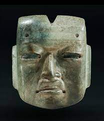

Name: 157. Templo Mayor. Tenochtitlan. Aztec. 1375- 1520 CE Stone (temple) Volcanic stone (Coyolxauhqui stone).
Form
Circular relief sculpture
Once brilliantly painted
So called because of the bells she wears as earrings
Context
Coyolxauhqui and her many brothers plotted the death of her mother. Coatlicue, who became pregnant after tucking a ball of feathers down her bosom. When Coyolxauhqui chopped off Coatlicu’s head, a child, Huitzilopochtli, popped out of the severed body fully grown and dismembered Coyolxauhqui, who fell dead at the base of the shrine.
This stone represents the dismembered moon goddess, Coyolxauhqui, who is placed at the base of the twin pyramids of Tenochtitlan.
Aztecs similarly dismembered enemies and threw them down the stairs of the great pyramid to land on the sculpture of Coyolxauhqui
Aztecs sacrificed people and then threw their dismembered remains down the steps of the temple as Huitzilopochtli did to Coyolxauhqui.
A relationship was established between the death and decapitation of Coyolxauqui with the sacrifice of enemies at the top of Aztec pyramids

Olmec-style mask
Found on the site; actually a much older work executed by the Olmecs
Olmec works have a characteristic frown on the face; pungnacious visage; baby face; a cleft in the center of the head carved from greenstone
Shows that the Aztecs collected and embraced artwork from other cultures, including early Mexican cultures such as the Olmec and Teotihuacan
Shows that the Aztecs had a wide-ranging merchant network that traded historical items